3 線形回帰分析
はじめに, コードの可読性を高めるため, パッケージtidyverseをロードしておく.
例えば, tidyverse内にあるパッケージmagrittrの提供する機能であるパイプ (演算子) %>% を関数head()と組合せて使用し, 出力量を抑える.
3.1 重回帰分析の基本操作
データ1: 1ルーム賃貸マンション
- 1ルーム賃貸マンション, 家賃データ, 50件 (仮想データ)
- rent: 月額家賃 (円)
- area: 専有面積 (平米)
- yrs: 築後年数 (年)
- dist: 最寄駅からの徒歩距離 (m)- データの読み込み
rentdat <- read.csv("rentdat.csv", header = T)
head(rentdat) # R標準の記法
#> rent area yrs dist
#> 1 60000 18.45 8.73 837.46
#> 2 61000 19.84 13.33 520.86
#> 3 74000 22.45 8.26 433.77
#> 4 77000 26.81 5.94 1192.32
#> 5 59000 17.62 3.85 815.17
#> 6 86000 26.68 4.19 373.87
# または, パイプ (%>%) を利用して, rentdat %>% head()実行に先立ち, pairs()やcor()を使い, 変数間の従属性や, 相関係数の大きさを確認する.
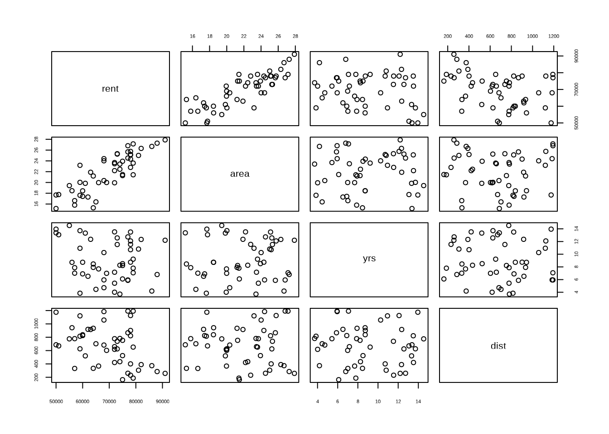
cor(rentdat)
#> rent area yrs dist
#> rent 1.0000000 0.84098526 -0.16885266 -0.36727009
#> area 0.8409853 1.00000000 0.05454398 -0.02291733
#> yrs -0.1688527 0.05454398 1.00000000 -0.05812975
#> dist -0.3672701 -0.02291733 -0.05812975 1.00000000
# パイプ (%>%) を利用しても良い rentdat %>% pairs() rentdat %>% cor()- 回帰実行
関数lm()を使用して最小二乗法による適合を行う. 実行結果はsummary()で確認する.
res_lm <- lm(rent ~ ., data = rentdat)
summary(res_lm)
#>
#> Call:
#> lm(formula = rent ~ ., data = rentdat)
#>
#> Residuals:
#> Min 1Q Median 3Q Max
#> -6732 -2379 -1016 2286 7256
#>
#> Coefficients:
#> Estimate Std. Error t value Pr(>|t|)
#> (Intercept) 32261.469 3652.405 8.833 1.81e-11 ***
#> area 2397.144 142.744 16.793 < 2e-16 ***
#> yrs -745.440 159.275 -4.680 2.55e-05 ***
#> dist -12.443 1.733 -7.180 4.89e-09 ***
#> ---
#> Signif. codes: 0 '***' 0.001 '**' 0.01 '*' 0.05 '.' 0.1 ' ' 1
#>
#> Residual standard error: 3531 on 46 degrees of freedom
#> Multiple R-squared: 0.8838, Adjusted R-squared: 0.8762
#> F-statistic: 116.6 on 3 and 46 DF, p-value: < 2.2e-16回帰分析結果の読み方
推定された回帰式は次の通りである. \[ \widehat{\text{rent}} = 32,261 + 2,397\,\text{area} -745\,\text{yrs} -12.44\,\text{dist} \]
(1) 偏回帰係数の解釈
重回帰の係数 (偏回帰係数) は, 他の説明変数の値を一定に保ったとき, その説明変数が1単位増えると被説明変数 (家賃) が平均的にどれだけ変化するかを表す.
area: 築後年数と駅距離が同じなら, 専有面積が1平米広い物件の家賃は平均で約2,397円高い.yrs: 専有面積と駅距離が同じなら, 築年数が1年古い物件の家賃は平均で約745円安い.dist: 専有面積と築年数が同じなら, 駅から1m遠いと約12.4円安い. 1mでは実感が湧きにくいので, 100mあたり約1,244円安いと読み替えるとわかりやすい. 係数の大きさは変数の単位に依存する点に注意する.- 切片 (
(Intercept)): 面積0平米, 築0年, 駅距離0mの物件の家賃に相当するが, このような物件はデータの範囲外であり, 実質的な意味はない. 回帰式の水準を決める定数と考えればよい. - 係数の符号が事前の想定 (広いほど高い, 古いほど・遠いほど安い) と整合しているかも確認する. 想定と逆の符号が出た場合は, データやモデルの見直しのきっかけとなる.
なお, 1変数ずつの単回帰 (例. lm(rent ~ yrs, data = rentdat)) の係数は, 一般に重回帰の偏回帰係数と一致しない. このデータでは説明変数どうしの相関がほぼゼロであるため大きな違いはないが, 説明変数間に相関があると, 単回帰と重回帰とで係数の大きさ, さらには符号まで変わり得る.
(2) 係数の有意性: 標準誤差, t値, p値
Std. Error: 係数推定値の標準誤差 (推定の精度). 小さいほど精度が高い.t value: 帰無仮説 \(H_0: \beta_j = 0\) (その変数は家賃に影響しない) の検定統計量で,Estimate / Std. Error.Pr(>|t|): 上記検定のp値. 本例では3変数とも p < 0.001 であり, いずれも有意に家賃と関係しているといえる.- 統計的に有意であることと, 影響が (実務的に) 大きいことは別の問題である. 影響の大きさは係数の値と変数の単位 (変動幅) をあわせて判断する (後述の標準化偏回帰係数も参照).
(3) 係数の信頼区間
下記のconfint()で計算される95%信頼区間より, 例えば専有面積1平米あたりの家賃上昇額は, およそ2,110円から2,684円の範囲にあると推定される. 区間が0を含まないことは, 5%水準で有意であることと対応している.
(4) モデル全体の当てはまり
Multiple R-squared(決定係数 \(R^2\)) = 0.884: 家賃の変動の約88%が3つの説明変数で説明される.Adjusted R-squared(自由度調整済み決定係数) = 0.876: 説明変数の数によるペナルティを考慮した \(R^2\). 説明変数の数が異なるモデルを比較する際に用いる.Residual standard error= 3,531円: 残差の標準偏差の推定値. 予測の際の典型的な誤差の大きさの目安となる (家賃の平均 約69,680円と比較してみよ).F-statistic: 帰無仮説「全ての偏回帰係数が0」の検定. p値が非常に小さく, モデル全体として説明力があるといえる.実行結果の取り出し
# 回帰係数の取り出し
coef(res_lm) # 関数の利用
#> (Intercept) area yrs dist
#> 32261.46944 2397.14374 -745.44017 -12.44341
res_lm$coef # 省略形による指示可能
#> (Intercept) area yrs dist
#> 32261.46944 2397.14374 -745.44017 -12.44341
# res_lm$coefficients
# 適合値 (予測値) の取り出し
fitted(res_lm) %>%
head() # head()により, 最初の6行のみ表示 (デフォルト)
#> 1 2 3 4 5 6
#> 59560.22 63402.81 74522.43 77264.45 61485.70 88441.65
# res_lm$fitted
# 残差の取り出し
resid(res_lm) # 関数の利用
#> 1 2 3 4 5 6 7
#> 439.7807 -2402.8084 -522.4320 -264.4500 -2485.7017 -2441.6518 -1029.7327
#> 8 9 10 11 12 13 14
#> 5176.2213 -6732.0408 2427.4126 376.6794 4555.9941 -1754.1073 1534.2533
#> 15 16 17 18 19 20 21
#> 647.1293 -2143.6007 5146.9150 4191.1927 2626.1939 5839.5466 1751.7939
#> 22 23 24 25 26 27 28
#> -5750.1494 -2990.2238 -5767.8528 -2307.8140 -3235.3851 -114.3409 -3829.2694
#> 29 30 31 32 33 34 35
#> 715.0065 -3332.8895 7256.4052 2590.8913 3537.0448 1388.8917 6999.9397
#> 36 37 38 39 40 41 42
#> -3321.0903 -2191.1362 5489.4176 -3603.0246 -1025.7680 -1625.3943 -1887.0020
#> 43 44 45 46 47 48 49
#> -1650.4408 1863.8094 -1133.3323 -2663.5164 5523.2614 -1554.5109 -1311.7071
#> 50
#> -1006.4070
res_lm$resid %>%
head()
#> 1 2 3 4 5 6
#> 439.7807 -2402.8084 -522.4320 -264.4500 -2485.7017 -2441.6518
# res_lm$residuals
# 回帰係数の信頼区間の計算
confint(res_lm)
#> 2.5 % 97.5 %
#> (Intercept) 24909.55913 39613.379763
#> area 2109.81414 2684.473338
#> yrs -1066.04436 -424.835985
#> dist -15.93178 -8.955039- モデル診断
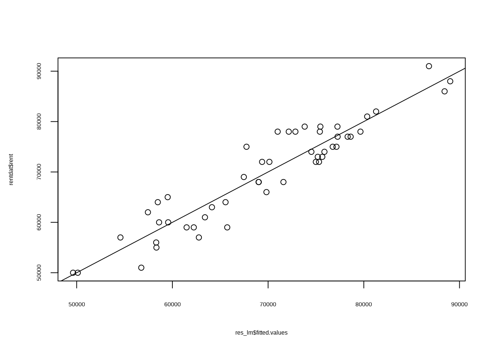
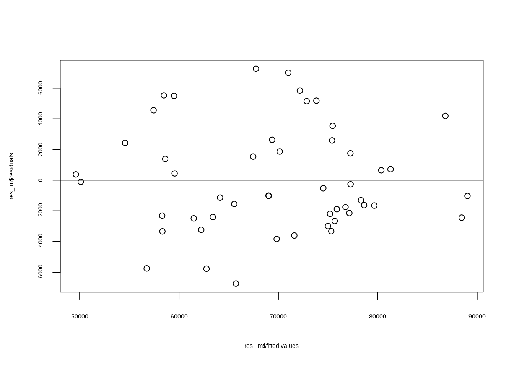
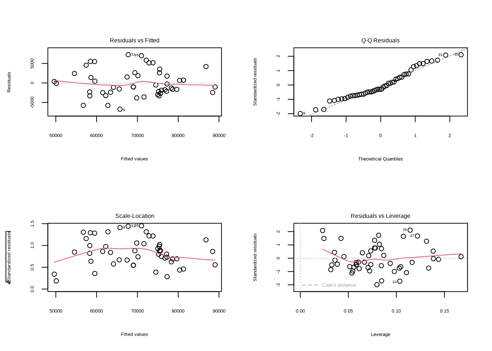
1枚目は観測値と適合値の散布図で, 点が45度線の周りに集まっているほど当てはまりが良い. 2枚目は適合値と残差の散布図で, 残差が0の周りに特定のパターン (曲線状の傾向, 適合値とともに広がるばらつき等) なくランダムに散らばっていれば, 線形モデルの仮定に大きな問題はないと判断できる. 最後の4枚組はplot()による標準的な診断図 (残差プロット, 残差の正規Q-Qプロット等) である.
- 適合モデルを使った予測
- 内挿予測 (適合値の計算)
- 外挿予測
- 例. 専有面積=18.8平米, 築後年数=13年, 駅距離=800m, または100mの物件の賃料は?
new <- data.frame(area = 18.8, dist = c(800, 100), yrs = 13)
predict(res_lm, newdata = new)
#> 1 2
#> 57682.32 66392.71
# predict.lm(res_lm, newdata = new) res_lm$residuals\t\t# resid(res_lm)2物件の予測家賃の差 (約8,710円) は, 駅距離の差700m × distの係数 (-12.44円/m) に等しい. 他の条件が同じ物件どうしの比較では, 偏回帰係数がそのまま家賃差を与えることが確認できる.
また, summary()には最小二乗推定の各種結果が格納されている.
str(summary(res_lm))
#> List of 11
#> $ call : language lm(formula = rent ~ ., data = rentdat)
#> $ terms :Classes 'terms', 'formula' language rent ~ area + yrs + dist
#> .. ..- attr(*, "variables")= language list(rent, area, yrs, dist)
#> .. ..- attr(*, "factors")= int [1:4, 1:3] 0 1 0 0 0 0 1 0 0 0 ...
#> .. .. ..- attr(*, "dimnames")=List of 2
#> .. .. .. ..$ : chr [1:4] "rent" "area" "yrs" "dist"
#> .. .. .. ..$ : chr [1:3] "area" "yrs" "dist"
#> .. ..- attr(*, "term.labels")= chr [1:3] "area" "yrs" "dist"
#> .. ..- attr(*, "order")= int [1:3] 1 1 1
#> .. ..- attr(*, "intercept")= int 1
#> .. ..- attr(*, "response")= int 1
#> .. ..- attr(*, ".Environment")=<environment: R_GlobalEnv>
#> .. ..- attr(*, "predvars")= language list(rent, area, yrs, dist)
#> .. ..- attr(*, "dataClasses")= Named chr [1:4] "numeric" "numeric" "numeric" "numeric"
#> .. .. ..- attr(*, "names")= chr [1:4] "rent" "area" "yrs" "dist"
#> $ residuals : Named num [1:50] 440 -2403 -522 -264 -2486 ...
#> ..- attr(*, "names")= chr [1:50] "1" "2" "3" "4" ...
#> $ coefficients : num [1:4, 1:4] 32261.5 2397.1 -745.4 -12.4 3652.4 ...
#> ..- attr(*, "dimnames")=List of 2
#> .. ..$ : chr [1:4] "(Intercept)" "area" "yrs" "dist"
#> .. ..$ : chr [1:4] "Estimate" "Std. Error" "t value" "Pr(>|t|)"
#> $ aliased : Named logi [1:4] FALSE FALSE FALSE FALSE
#> ..- attr(*, "names")= chr [1:4] "(Intercept)" "area" "yrs" "dist"
#> $ sigma : num 3531
#> $ df : int [1:3] 4 46 4
#> $ r.squared : num 0.884
#> $ adj.r.squared: num 0.876
#> $ fstatistic : Named num [1:3] 117 3 46
#> ..- attr(*, "names")= chr [1:3] "value" "numdf" "dendf"
#> $ cov.unscaled : num [1:4, 1:4] 1.069834 -0.035212 -0.017107 -0.000183 -0.035212 ...
#> ..- attr(*, "dimnames")=List of 2
#> .. ..$ : chr [1:4] "(Intercept)" "area" "yrs" "dist"
#> .. ..$ : chr [1:4] "(Intercept)" "area" "yrs" "dist"
#> - attr(*, "class")= chr "summary.lm"
summary(res_lm)$r.squared # R2
#> [1] 0.8837688
# summary(res_lm)['r.squared'] # 別の指定方法
summary(res_lm)$adj.r.squared # 補正R2
#> [1] 0.8761885
summary(res_lm)$coef
#> Estimate Std. Error t value Pr(>|t|)
#> (Intercept) 32261.46944 3652.405183 8.832938 1.805979e-11
#> area 2397.14374 142.744411 16.793258 3.002396e-21
#> yrs -745.44017 159.275119 -4.680205 2.548844e-05
#> dist -12.44341 1.733012 -7.180222 4.893016e-09- 標準化 (偏) 回帰係数
あらかじめ変数を標準化しておいてからlm()を実行すると, 標準化偏回帰係数が得られる.
# 標準(化)回帰係数
srentdat <- scale(rentdat) # scale()の返り値は行列 (matrix) 型 → データフレームへ変換
srentdat <- data.frame(srentdat)
sres_lm <- lm(rent ~ area + yrs + dist, data = srentdat)
summary(sres_lm)
#>
#> Call:
#> lm(formula = rent ~ area + yrs + dist, data = srentdat)
#>
#> Residuals:
#> Min 1Q Median 3Q Max
#> -0.6708 -0.2371 -0.1013 0.2278 0.7231
#>
#> Coefficients:
#> Estimate Std. Error t value Pr(>|t|)
#> (Intercept) 8.657e-17 4.976e-02 0.00 1
#> area 8.456e-01 5.035e-02 16.79 < 2e-16 ***
#> yrs -2.360e-01 5.042e-02 -4.68 2.55e-05 ***
#> dist -3.616e-01 5.036e-02 -7.18 4.89e-09 ***
#> ---
#> Signif. codes: 0 '***' 0.001 '**' 0.01 '*' 0.05 '.' 0.1 ' ' 1
#>
#> Residual standard error: 0.3519 on 46 degrees of freedom
#> Multiple R-squared: 0.8838, Adjusted R-squared: 0.8762
#> F-statistic: 116.6 on 3 and 46 DF, p-value: < 2.2e-16
# 偏回帰係数 vs 標準(化)偏回帰係数
summary(res_lm)["coefficients"]
#> $coefficients
#> Estimate Std. Error t value Pr(>|t|)
#> (Intercept) 32261.46944 3652.405183 8.832938 1.805979e-11
#> area 2397.14374 142.744411 16.793258 3.002396e-21
#> yrs -745.44017 159.275119 -4.680205 2.548844e-05
#> dist -12.44341 1.733012 -7.180222 4.893016e-09
summary(sres_lm)["coefficients"]
#> $coefficients
#> Estimate Std. Error t value Pr(>|t|)
#> (Intercept) 8.657426e-17 0.04976173 1.739776e-15 1.000000e+00
#> area 8.455702e-01 0.05035176 1.679326e+01 3.002396e-21
#> yrs -2.359937e-01 0.05042380 -4.680205e+00 2.548844e-05
#> dist -3.616101e-01 0.05036197 -7.180222e+00 4.893016e-09
# 確認
y_sd <- sd(rentdat$rent)
x_sd <- apply(rentdat[, -1], 2, sd)
res_lm$coef[-1] * x_sd/y_sd
#> area yrs dist
#> 0.8455702 -0.2359937 -0.3616101標準化偏回帰係数は, 説明変数が1標準偏差変化したときに家賃が何標準偏差変化するかを表し, 変数の単位に依存しない. 本例では area (0.85), dist (-0.36), yrs (-0.24) の順に絶対値が大きく, 家賃の水準に対しては専有面積の影響が最も大きいと読める. 元の単位の偏回帰係数 (distは-12.44円/m, areaは2,397円/平米) の大小だけでは, このような比較はできない.
3.2 回帰分析の結果の見方と変数の選択
データ2: 上場企業のPBRデータ (仮想データ)
上場企業 (金融業を除く) 500社について, 株価純資産倍率 (PBR) と, その説明要因となりうる財務指標等を集めた仮想データである. PBRを, ROEのデュポン分解の3要素 (利益率・回転率・レバレッジ) と, 成長性・規模・業種によって説明することを考える.
\[ \mathrm{ROE} = \frac{\text{純利益}}{\text{自己資本}} = \underbrace{\frac{\text{純利益}}{\text{売上高}}}_{\text{売上高純利益率}} \times \underbrace{\frac{\text{売上高}}{\text{総資産}}}_{\text{総資産回転率}} \times \underbrace{\frac{\text{総資産}}{\text{自己資本}}}_{\text{財務レバレッジ}} \]
- PBRデータ (firm_pbr.csv), 500社 x 10変数 (仮想データ)
- pbr: PBR, 株価純資産倍率 (倍) (目的変数)
- roe: ROE, 自己資本利益率 (%) (= margin × turnover × leverage)
- margin: 売上高純利益率 (%)
- turnover: 総資産回転率 (回)
- leverage: 財務レバレッジ (総資産/自己資本, 倍)
- growth: 売上高成長率 (前年比, %)
- div_yield: 配当利回り (%) ※ 配当利回り = 配当性向 × ROE ÷ PBR の関係がある
- mcap: 時価総額 (億円)
- industry: 業種 ("manuf": 製造業, "retail": 小売業, "service": 情報通信・サービス業)
- tokyo: 本社所在地ダミー (1: 東京都, 0: それ以外)業種 industry は質的変数である. 質的変数 (因子) の扱いは「説明変数に質的変数を含む回帰」の節で詳しく扱うが, ここでは因子型に変換して, そのまま lm() に入れて良い.
firm <- read.csv("firm_pbr.csv", header = T)
firm$industry <- factor(firm$industry) # 業種を因子型に変換
summary(firm)
#> pbr roe margin turnover
#> Min. :0.380 Min. :-11.19 Min. :-6.000 Min. :0.430
#> 1st Qu.:0.920 1st Qu.: 5.61 1st Qu.: 2.458 1st Qu.:0.750
#> Median :1.235 Median : 9.49 Median : 4.605 Median :0.950
#> Mean :1.323 Mean : 10.71 Mean : 5.416 Mean :1.089
#> 3rd Qu.:1.640 3rd Qu.: 14.86 3rd Qu.: 7.995 3rd Qu.:1.173
#> Max. :3.470 Max. : 41.20 Max. :20.160 Max. :2.930
#> leverage growth div_yield mcap
#> Min. :1.220 Min. :-19.100 Min. :0.340 Min. : 10
#> 1st Qu.:1.710 1st Qu.: -0.900 1st Qu.:1.720 1st Qu.: 198
#> Median :1.970 Median : 3.700 Median :2.470 Median : 481
#> Mean :2.111 Mean : 3.902 Mean :2.708 Mean : 1228
#> 3rd Qu.:2.340 3rd Qu.: 9.200 3rd Qu.:3.425 3rd Qu.: 1236
#> Max. :6.550 Max. : 30.600 Max. :8.000 Max. :15575
#> industry tokyo
#> manuf :253 Min. :0.0
#> retail : 99 1st Qu.:0.0
#> service:148 Median :0.5
#> Mean :0.5
#> 3rd Qu.:1.0
#> Max. :1.0実行に先立ち, 散布図行列や相関係数行列で変数間の関係を確認する.
ライブラリcorrplotの関数corrplot()を使うと, 相関係数のヒートマップを作成することができる.
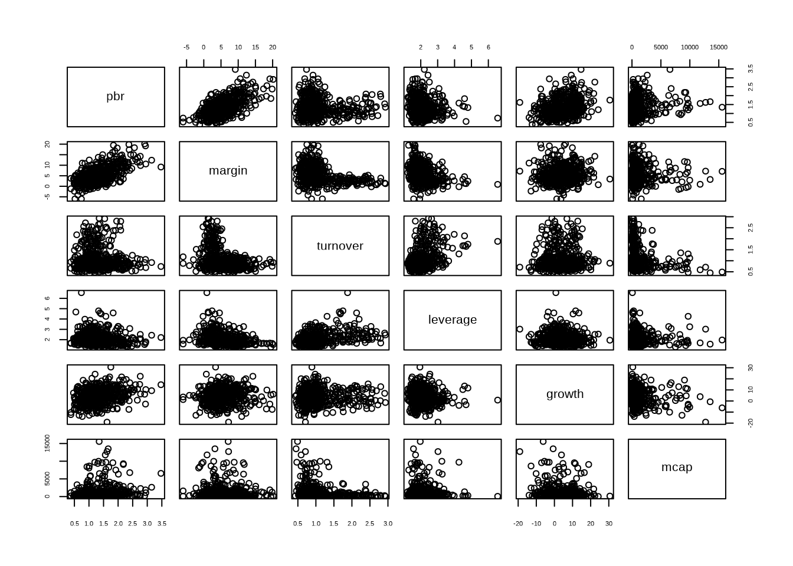
round(cor(firm[, c("pbr", "roe", "margin", "turnover", "leverage", "growth", "mcap")]),
2)
#> pbr roe margin turnover leverage growth mcap
#> pbr 1.00 0.53 0.63 -0.06 -0.12 0.32 0.18
#> roe 0.53 1.00 0.72 0.20 0.20 0.07 -0.09
#> margin 0.63 0.72 1.00 -0.32 -0.29 0.09 -0.01
#> turnover -0.06 0.20 -0.32 1.00 0.38 0.00 -0.21
#> leverage -0.12 0.20 -0.29 0.38 1.00 -0.06 0.00
#> growth 0.32 0.07 0.09 0.00 -0.06 1.00 -0.14
#> mcap 0.18 -0.09 -0.01 -0.21 0.00 -0.14 1.00
library(corrplot)
corrplot(cor(select(firm, -industry, -tokyo))) # 質的変数を除去. select()はdplyr (tidyverseに含まれる)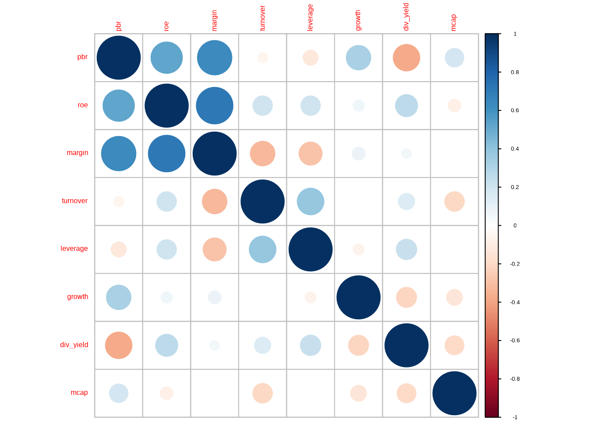
lm()の出力の読み方
デュポン分解の3要素でPBRを説明する回帰モデルを推定する (講義スライド「線形回帰③」の出力例).
res_mod1 <- lm(pbr ~ margin + turnover + leverage, data = firm)
summary(res_mod1)
#>
#> Call:
#> lm(formula = pbr ~ margin + turnover + leverage, data = firm)
#>
#> Residuals:
#> Min 1Q Median 3Q Max
#> -0.97185 -0.27721 -0.02146 0.23329 1.88132
#>
#> Coefficients:
#> Estimate Std. Error t value Pr(>|t|)
#> (Intercept) 0.647548 0.081687 7.927 1.49e-14 ***
#> margin 0.086295 0.004572 18.876 < 2e-16 ***
#> turnover 0.166596 0.039125 4.258 2.47e-05 ***
#> leverage 0.012391 0.032275 0.384 0.701
#> ---
#> Signif. codes: 0 '***' 0.001 '**' 0.01 '*' 0.05 '.' 0.1 ' ' 1
#>
#> Residual standard error: 0.3931 on 496 degrees of freedom
#> Multiple R-squared: 0.4267, Adjusted R-squared: 0.4232
#> F-statistic: 123 on 3 and 496 DF, p-value: < 2.2e-16Estimate: 回帰係数の推定値,Std. Error: 標準誤差,t value: \(t\)値 (= 推定値 / 標準誤差),Pr(>|t|): (\(t\)値に対する) \(p\)値Residual standard error: 残差標準誤差,Multiple R-squared/Adjusted R-squared: 決定係数/補正決定係数,F-statisticのp-value: モデル全体の有意性 (\(F\)検定の\(p\)値)
利益率 margin と回転率 turnover は有意に正である一方, レバレッジ leverage は有意ではない (\(p\)値 = 0.701).
市場は, 利益率や資産効率で稼ぐROEは評価するが, レバレッジ (負債の活用) で稼ぐROEはあまり評価しない, という解釈ができるかもしれない.
変数の順番を入れ替えても, 回帰係数の推定結果は変わらない.
一方, 分散分析表 (anova()) は, 通常, 変数の順番に依存する.
これは, 分散分析表の各行が「それより上の変数を入れた後に, その変数を追加することで減少した残差平方和」(逐次平方和) を表しているためである.
業種の違いを反映して margin と turnover には相関があるため (相関係数 -0.32), 両者の順番によって平方和が大きく変わる.
res_mod2 <- lm(pbr ~ turnover + margin + leverage, data = firm)
summary(res_mod2)$coef
#> Estimate Std. Error t value Pr(>|t|)
#> (Intercept) 0.64754759 0.081686682 7.9272114 1.492457e-14
#> turnover 0.16659569 0.039125265 4.2580080 2.467757e-05
#> margin 0.08629539 0.004571802 18.8755743 2.730802e-60
#> leverage 0.01239137 0.032274590 0.3839357 7.011906e-01
anova(res_mod1)
#> Analysis of Variance Table
#>
#> Response: pbr
#> Df Sum Sq Mean Sq F value Pr(>F)
#> margin 1 53.726 53.726 347.6485 < 2.2e-16 ***
#> turnover 1 3.299 3.299 21.3450 4.896e-06 ***
#> leverage 1 0.023 0.023 0.1474 0.7012
#> Residuals 496 76.652 0.155
#> ---
#> Signif. codes: 0 '***' 0.001 '**' 0.01 '*' 0.05 '.' 0.1 ' ' 1
anova(res_mod2)
#> Analysis of Variance Table
#>
#> Response: pbr
#> Df Sum Sq Mean Sq F value Pr(>F)
#> turnover 1 0.425 0.425 2.7530 0.0977 .
#> margin 1 56.599 56.599 366.2406 <2e-16 ***
#> leverage 1 0.023 0.023 0.1474 0.7012
#> Residuals 496 76.652 0.155
#> ---
#> Signif. codes: 0 '***' 0.001 '**' 0.01 '*' 0.05 '.' 0.1 ' ' 1なお, 最終行の (自由度1の) 変数 leverage については, 分散分析表内の\(p\)値は回帰係数の\(p\)値に等しく, 分散分析表内の\(F\)値は回帰係数の\(t\)値の2乗に等しい.
変数の追加・除去
関数 update() を使うと, 推定済みのモデルに変数を追加・除去したモデルを簡単に作れる.
# update関数でモデル更新: 変数growth追加
res_lm2 <- update(res_mod1, . ~ . + growth)
summary(res_lm2)
#>
#> Call:
#> lm(formula = pbr ~ margin + turnover + leverage + growth, data = firm)
#>
#> Residuals:
#> Min 1Q Median 3Q Max
#> -0.88658 -0.25310 -0.03272 0.23156 1.67710
#>
#> Coefficients:
#> Estimate Std. Error t value Pr(>|t|)
#> (Intercept) 0.574441 0.077194 7.442 4.44e-13 ***
#> margin 0.083389 0.004306 19.365 < 2e-16 ***
#> turnover 0.153133 0.036765 4.165 3.67e-05 ***
#> leverage 0.025633 0.030340 0.845 0.399
#> growth 0.019364 0.002351 8.237 1.59e-15 ***
#> ---
#> Signif. codes: 0 '***' 0.001 '**' 0.01 '*' 0.05 '.' 0.1 ' ' 1
#>
#> Residual standard error: 0.369 on 495 degrees of freedom
#> Multiple R-squared: 0.4958, Adjusted R-squared: 0.4917
#> F-statistic: 121.7 on 4 and 495 DF, p-value: < 2.2e-16# 変数tokyo追加
res_lm3 <- update(res_lm2, . ~ . + tokyo)
summary(res_lm3)
#>
#> Call:
#> lm(formula = pbr ~ margin + turnover + leverage + growth + tokyo,
#> data = firm)
#>
#> Residuals:
#> Min 1Q Median 3Q Max
#> -0.88019 -0.25697 -0.03168 0.23145 1.67092
#>
#> Coefficients:
#> Estimate Std. Error t value Pr(>|t|)
#> (Intercept) 0.581684 0.079683 7.300 1.16e-12 ***
#> margin 0.083365 0.004310 19.340 < 2e-16 ***
#> turnover 0.151969 0.036930 4.115 4.54e-05 ***
#> leverage 0.025839 0.030372 0.851 0.395
#> growth 0.019334 0.002354 8.212 1.91e-15 ***
#> tokyo -0.012328 0.033182 -0.372 0.710
#> ---
#> Signif. codes: 0 '***' 0.001 '**' 0.01 '*' 0.05 '.' 0.1 ' ' 1
#>
#> Residual standard error: 0.3694 on 494 degrees of freedom
#> Multiple R-squared: 0.4959, Adjusted R-squared: 0.4908
#> F-statistic: 97.21 on 5 and 494 DF, p-value: < 2.2e-16tokyo は有意ではなく, 補正決定係数もほとんど改善しない.
# 変数mcap追加, tokyo除去
res_lm4 <- update(res_lm3, . ~ . + mcap - tokyo)
summary(res_lm4)
#>
#> Call:
#> lm(formula = pbr ~ margin + turnover + leverage + growth + mcap,
#> data = firm)
#>
#> Residuals:
#> Min 1Q Median 3Q Max
#> -0.82747 -0.23287 -0.02356 0.20494 1.30439
#>
#> Coefficients:
#> Estimate Std. Error t value Pr(>|t|)
#> (Intercept) 4.297e-01 7.350e-02 5.846 9.18e-09 ***
#> margin 8.534e-02 4.006e-03 21.307 < 2e-16 ***
#> turnover 2.248e-01 3.508e-02 6.409 3.43e-10 ***
#> leverage 7.754e-03 2.825e-02 0.274 0.784
#> growth 2.190e-02 2.202e-03 9.945 < 2e-16 ***
#> mcap 6.840e-05 7.655e-06 8.934 < 2e-16 ***
#> ---
#> Signif. codes: 0 '***' 0.001 '**' 0.01 '*' 0.05 '.' 0.1 ' ' 1
#>
#> Residual standard error: 0.3428 on 494 degrees of freedom
#> Multiple R-squared: 0.5659, Adjusted R-squared: 0.5615
#> F-statistic: 128.8 on 5 and 494 DF, p-value: < 2.2e-16目的変数 pbr と説明変数 mcap (時価総額) の関係を散布図で確認すると, mcap は右に裾の長い分布をしており, 直線的な関係から外れている.
mcap を対数変換すると, 直線的な関係に近づく.
par(mfrow = c(1, 2))
plot(firm$mcap, firm$pbr, xlab = "mcap", ylab = "pbr")
plot(log(firm$mcap), firm$pbr, xlab = "log(mcap)", ylab = "pbr")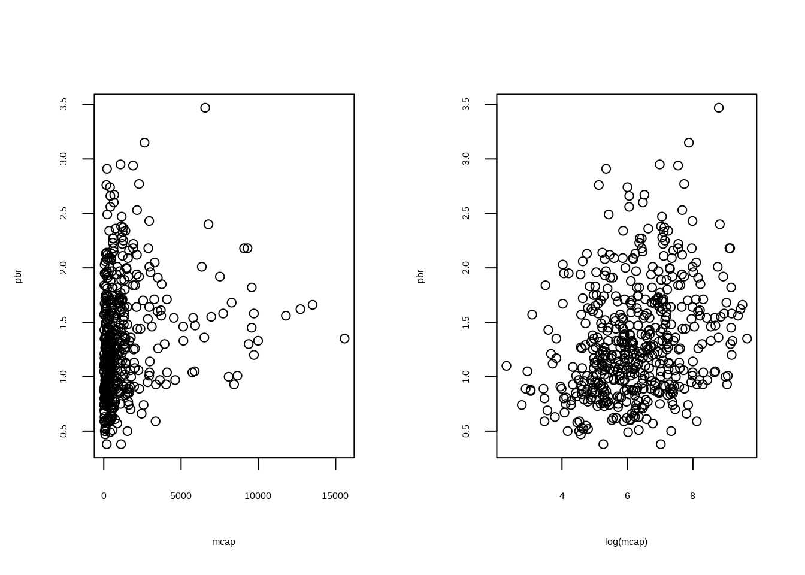
# mcapの対数を新変数log_mcapとして定義し, モデルに追加
firm2 <- data.frame(firm, log_mcap = log(firm$mcap))
res_lm5 <- lm(pbr ~ margin + turnover + leverage + growth + log_mcap, data = firm2)
summary(res_lm5)
#>
#> Call:
#> lm(formula = pbr ~ margin + turnover + leverage + growth + log_mcap,
#> data = firm2)
#>
#> Residuals:
#> Min 1Q Median 3Q Max
#> -0.77710 -0.22963 -0.01206 0.20767 1.30679
#>
#> Coefficients:
#> Estimate Std. Error t value Pr(>|t|)
#> (Intercept) -0.392073 0.101953 -3.846 0.000136 ***
#> margin 0.084403 0.003750 22.506 < 2e-16 ***
#> turnover 0.270689 0.033341 8.119 3.78e-15 ***
#> leverage -0.013454 0.026598 -0.506 0.613197
#> growth 0.023382 0.002071 11.288 < 2e-16 ***
#> log_mcap 0.144253 0.011442 12.608 < 2e-16 ***
#> ---
#> Signif. codes: 0 '***' 0.001 '**' 0.01 '*' 0.05 '.' 0.1 ' ' 1
#>
#> Residual standard error: 0.3213 on 494 degrees of freedom
#> Multiple R-squared: 0.6185, Adjusted R-squared: 0.6147
#> F-statistic: 160.2 on 5 and 494 DF, p-value: < 2.2e-16補正決定係数は 0.562 から 0.615 に改善した.
標準的なモデル選択規準であるAICやBICは, 関数AIC(), BIC()によって計算することができる.
AIC(res_lm5, res_lm4)
#> df AIC
#> res_lm5 7 291.5643
#> res_lm4 7 356.1520
BIC(res_lm5, res_lm4)
#> df BIC
#> res_lm5 7 321.0666
#> res_lm4 7 385.6543AIC, BIC双方とも, res_lm5はres_lm4より望ましいことを示している.
入れ子型 (nested) の関係にある2つのモデルを anova() に与えることで, 追加した変数群 (ここでは成長性と規模) の有意性を \(F\)検定でまとめて検定できる (講義スライド「線形回帰③」の例).
anova(res_mod1, res_lm5)
#> Analysis of Variance Table
#>
#> Model 1: pbr ~ margin + turnover + leverage
#> Model 2: pbr ~ margin + turnover + leverage + growth + log_mcap
#> Res.Df RSS Df Sum of Sq F Pr(>F)
#> 1 496 76.652
#> 2 494 51.002 2 25.651 124.23 < 2.2e-16 ***
#> ---
#> Signif. codes: 0 '***' 0.001 '**' 0.01 '*' 0.05 '.' 0.1 ' ' 1
# anova(res_mod1, res_lm5, test = 'LRT') # 尤度比検定\(p\)値は非常に小さく, 成長性と規模の2変数を加えることで, モデルの説明力は有意に改善している.
- ステップワイズ法による変数選択
ステップワイズ法は, 関数lm()の実行結果オブジェクトを, 関数step()に入力として与えることで実行することができる.
# step(); AICによって決定
# scope: モデルサーチの範囲 (追加や削除を検討するべき変数を指定)
# scope指定ない場合:
# - directionのデフォルトは, 変数減少法 (後方削除)
# - モデルサーチ上限 (upper) は, 初期モデル
# scope指定ある場合:
# - directionのデフォルトは, 変数増減法
# - scopeがリストでなく, 単一式で与えられている場合, upperモデルと解釈 (lowerは欠損)firm3 <- select(firm2, -mcap) # mcapの代わりにlog_mcapを使用
res_lm_all <- lm(pbr ~ ., data = firm3) # → 全説明変数 (業種は2つのダミー変数として入る)
res_lm_all_2 <- lm(pbr ~ 1, data = firm3) # → y切片のみ (変数なし)
#
step(res_lm5) # 変数減少法 (scopeない場合のデフォルト)
#> Start: AIC=-1129.37
#> pbr ~ margin + turnover + leverage + growth + log_mcap
#>
#> Df Sum of Sq RSS AIC
#> - leverage 1 0.026 51.028 -1131.12
#> <none> 51.002 -1129.37
#> - turnover 1 6.805 57.807 -1068.75
#> - growth 1 13.155 64.156 -1016.64
#> - log_mcap 1 16.410 67.412 -991.89
#> - margin 1 52.295 103.297 -778.50
#>
#> Step: AIC=-1131.12
#> pbr ~ margin + turnover + growth + log_mcap
#>
#> Df Sum of Sq RSS AIC
#> <none> 51.028 -1131.12
#> - turnover 1 7.360 58.388 -1065.75
#> - growth 1 13.210 64.238 -1018.00
#> - log_mcap 1 16.481 67.509 -993.17
#> - margin 1 54.412 105.440 -770.23
#>
#> Call:
#> lm(formula = pbr ~ margin + turnover + growth + log_mcap, data = firm2)
#>
#> Coefficients:
#> (Intercept) margin turnover growth log_mcap
#> -0.41203 0.08474 0.26500 0.02342 0.14358
# step(res_lm5, direction = 'forward')\t# 変数増加法 (上限は初期モデル)
# step(res_lm5, direction = 'both')\t# 変数増減法 (上限は初期モデル)変数減少法により, leverage が除かれた.
# 採用する変数の上限・下限の指定
step(res_lm_all, scope = list(lower = ~margin + turnover + leverage)) # 下限のモデルを指定. 変数増減法
#> Start: AIC=-1323.47
#> pbr ~ roe + margin + turnover + leverage + growth + div_yield +
#> industry + tokyo + log_mcap
#>
#> Df Sum of Sq RSS AIC
#> - tokyo 1 0.0005 33.909 -1325.5
#> <none> 33.909 -1323.5
#> - roe 1 0.5722 34.481 -1317.1
#> - industry 2 3.0459 36.955 -1284.5
#> - growth 1 4.6422 38.551 -1261.3
#> - log_mcap 1 8.0191 41.928 -1219.3
#> - div_yield 1 10.8088 44.718 -1187.1
#>
#> Step: AIC=-1325.46
#> pbr ~ roe + margin + turnover + leverage + growth + div_yield +
#> industry + log_mcap
#>
#> Df Sum of Sq RSS AIC
#> <none> 33.909 -1325.5
#> - roe 1 0.5744 34.484 -1319.1
#> - industry 2 3.0458 36.955 -1286.5
#> - growth 1 4.6574 38.567 -1263.1
#> - log_mcap 1 8.0508 41.960 -1220.9
#> - div_yield 1 10.8087 44.718 -1189.1
#>
#> Call:
#> lm(formula = pbr ~ roe + margin + turnover + leverage + growth +
#> div_yield + industry + log_mcap, data = firm3)
#>
#> Coefficients:
#> (Intercept) roe margin turnover
#> 0.01077 0.01068 0.06314 0.27352
#> leverage growth div_yield industryretail
#> 0.04904 0.01465 -0.12210 -0.04364
#> industryservice log_mcap
#> 0.21717 0.10769
step(res_lm_all_2, scope = list(upper = ~margin + turnover + leverage)) # 上限のモデルを指定. 変数増減法
#> Start: AIC=-657.51
#> pbr ~ 1
#>
#> Df Sum of Sq RSS AIC
#> + margin 1 53.726 79.974 -912.45
#> + leverage 1 1.970 131.730 -662.93
#> <none> 133.700 -657.51
#> + turnover 1 0.425 133.274 -657.10
#>
#> Step: AIC=-912.45
#> pbr ~ margin
#>
#> Df Sum of Sq RSS AIC
#> + turnover 1 3.299 76.675 -931.51
#> + leverage 1 0.520 79.454 -913.71
#> <none> 79.974 -912.45
#> - margin 1 53.726 133.700 -657.51
#>
#> Step: AIC=-931.51
#> pbr ~ margin + turnover
#>
#> Df Sum of Sq RSS AIC
#> <none> 76.675 -931.51
#> + leverage 1 0.023 76.652 -929.66
#> - turnover 1 3.299 79.974 -912.45
#> - margin 1 56.599 133.274 -657.10
#>
#> Call:
#> lm(formula = pbr ~ margin + turnover, data = firm3)
#>
#> Coefficients:
#> (Intercept) margin turnover
#> 0.67027 0.08597 0.17137
step(res_lm5, scope = list(upper = ~margin + turnover + leverage + growth + log_mcap +
industry + tokyo, lower = ~margin + turnover + leverage))
#> Start: AIC=-1129.37
#> pbr ~ margin + turnover + leverage + growth + log_mcap
#>
#> Df Sum of Sq RSS AIC
#> + industry 2 6.2824 44.719 -1191.10
#> <none> 51.002 -1129.37
#> + tokyo 1 0.0083 50.993 -1127.46
#> - growth 1 13.1546 64.156 -1016.64
#> - log_mcap 1 16.4103 67.412 -991.89
#>
#> Step: AIC=-1191.1
#> pbr ~ margin + turnover + leverage + growth + log_mcap + industry
#>
#> Df Sum of Sq RSS AIC
#> <none> 44.719 -1191.1
#> + tokyo 1 0.0003 44.719 -1189.1
#> - industry 2 6.2824 51.002 -1129.4
#> - growth 1 9.3764 54.096 -1097.9
#> - log_mcap 1 16.7254 61.445 -1034.2
#>
#> Call:
#> lm(formula = pbr ~ margin + turnover + leverage + growth + log_mcap +
#> industry, data = firm2)
#>
#> Coefficients:
#> (Intercept) margin turnover leverage
#> -0.63350 0.07110 0.38666 0.04165
#> growth log_mcap industryretail industryservice
#> 0.02014 0.14717 -0.12019 0.30087
# 上限・下限を同時に指定. 変数増減法多重共線性のチェックについて
VIF (Variance Inflation Factor) によって, 説明変数間の多重共線性 (マルチコ) の 有無を確認することができる. VIFによる多重共線性への対応に関する慣用ルールとして, 5以上の値を持つ説明変数は要注意, 10以上の変数は除去するのが良いとされている.
# install.packages('car')\t\t# or RStudio, Tools → Install packages,
library(car) # 'Companion to Applied Regression' package
vif(res_lm_all) # 全説明変数についてVIFを計算
#> GVIF Df GVIF^(1/(2*Df))
#> roe 6.042142 1 2.458077
#> margin 6.566291 1 2.562478
#> turnover 5.642767 1 2.375451
#> leverage 2.031983 1 1.425477
#> growth 1.151077 1 1.072883
#> div_yield 1.377147 1 1.173519
#> industry 6.152914 2 1.574962
#> tokyo 1.015043 1 1.007494
#> log_mcap 1.270998 1 1.127386説明変数に質的変数 (industry) を含むため, VIFを拡張したGVIF (Generalized VIF) が表示されている (GVIFの見方は, 後述の高速道路事故データの例を参照).
roe, margin, turnover のGVIF (量的変数ではVIFと同じ) が5を超えている.
roe を除いてVIF値を再計算してみる.
vif(update(res_lm_all, . ~ . - roe)) # roeを除いてVIF値を再計算
#> GVIF Df GVIF^(1/(2*Df))
#> margin 1.505672 1 1.227058
#> turnover 3.992716 1 1.998178
#> leverage 1.421687 1 1.192345
#> growth 1.143216 1 1.069213
#> div_yield 1.310837 1 1.144918
#> industry 5.796596 2 1.551648
#> tokyo 1.013484 1 1.006720
#> log_mcap 1.258052 1 1.121629→ margin, turnover のVIF値が大きく減少した.
roe は, 恒等式 ROE = 利益率 × 回転率 × レバレッジ により, 他の3変数でほぼ決まってしまう.
このように, 恒等式 (定義式) の関係にある変数を同時に説明変数に入れると, 多重共線性の原因となる.
線形回帰分析におけるマルチコを考慮した変数選択法としては, 例えば, Kariya, Kurata and Hayashi (2024) の提案した”Empirically Effective Modelling Methodology (EEM-M)“がある.
参考文献
3.3 説明変数に質的変数を含む回帰
データセット#3: 高速道路事故データ
- Hoffstedt’s Highway accident data
- adt：1日の平均交通量（単位：千台)
- trks：総交通量に占めるトラック交通量の割合
- lane：交通の総車線数
- acpt：1マイルあたりのアクセスポイント数
- sigs: 1マイルあたりの信号付きインターチェンジの数
- itg：1マイルあたりの高速道路型インターチェンジの数
- slim：1973年の制限速度
- lwid: 車線幅（フィート単位）
- shld: 車道の外側路肩の幅（フィート単位)
- htype: 道路の種類または道路の財源を示す指標:
"mc": メジャーコレクター (major collector), "fai": 州間 (interstate) 高速道路, "pa": 地域・都市間主要幹線 (principal arterial) 道路, "ma"; 地域・都市内主要幹線 (major arterial) 道路
- rate: 1973年の事故発生率（百万車両マイル当たり）
- 注) htypeは4-水準因子
- 参考文献: Weisberg (2014), Applied Linear Regression, 4th Ed., Wiley.library(alr4)
data(Highway)
str(Highway)
#> 'data.frame': 39 obs. of 12 variables:
#> $ adt : int 69 73 49 61 28 30 46 25 43 23 ...
#> $ trks : int 8 8 10 13 12 6 8 9 12 7 ...
#> $ lane : int 8 4 4 6 4 4 4 4 4 4 ...
#> $ acpt : num 4.6 4.4 4.7 3.8 2.2 24.8 11 18.5 7.5 8.2 ...
#> $ sigs : num 0 0 0 0 0 1.84 0.7 0.38 1.39 1.21 ...
#> $ itg : num 1.2 1.43 1.54 0.94 0.65 0.34 0.47 0.38 0.95 0.12 ...
#> $ slim : int 55 60 60 65 70 55 55 55 50 50 ...
#> $ len : num 4.99 16.11 9.75 10.65 20.01 ...
#> $ lwid : int 12 12 12 12 12 12 12 12 12 12 ...
#> $ shld : int 10 10 10 10 10 10 8 10 4 5 ...
#> $ htype: Factor w/ 4 levels "mc","fai","pa",..: 2 2 2 2 2 3 3 3 3 3 ...
#> $ rate : num 4.58 2.86 3.02 2.29 1.61 6.87 3.85 6.12 3.29 5.88 ...
Highway %>%
head()
#> adt trks lane acpt sigs itg slim len lwid shld htype rate
#> 1 69 8 8 4.6 0.00 1.20 55 4.99 12 10 fai 4.58
#> 2 73 8 4 4.4 0.00 1.43 60 16.11 12 10 fai 2.86
#> 3 49 10 4 4.7 0.00 1.54 60 9.75 12 10 fai 3.02
#> 4 61 13 6 3.8 0.00 0.94 65 10.65 12 10 fai 2.29
#> 5 28 12 4 2.2 0.00 0.65 70 20.01 12 10 fai 1.61
#> 6 30 6 4 24.8 1.84 0.34 55 5.97 12 10 pa 6.87ライブラリcorrplotの関数corrplot.mixed()を使うと, 相関係数のヒートマップと相関係数の値を同時に表示するプロットを作成することができる.
library(corrplot)
cor_hw <- cor(cbind(Highway$rate, Highway[, -(11:12)])) # htypeを除去
corrplot.mixed(cor_hw)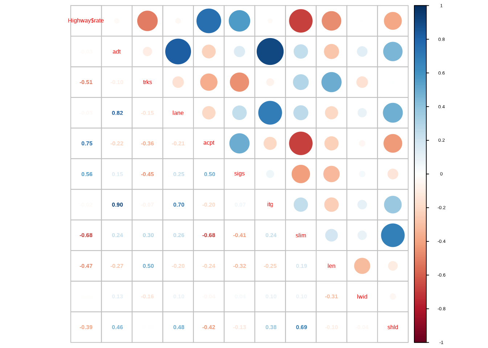
# OLS回帰
res_lm <- lm(rate ~ ., data = Highway)
summary(res_lm)
#>
#> Call:
#> lm(formula = rate ~ ., data = Highway)
#>
#> Residuals:
#> Min 1Q Median 3Q Max
#> -1.99564 -0.62039 -0.05676 0.61741 2.54998
#>
#> Coefficients:
#> Estimate Std. Error t value Pr(>|t|)
#> (Intercept) 13.658212 6.872719 1.987 0.0579 .
#> adt -0.004038 0.033945 -0.119 0.9063
#> trks -0.100150 0.114726 -0.873 0.3910
#> lane 0.026675 0.283834 0.094 0.9259
#> acpt 0.066588 0.042569 1.564 0.1303
#> sigs 0.713644 0.525213 1.359 0.1864
#> itg -0.475478 1.282742 -0.371 0.7140
#> slim -0.123778 0.081683 -1.515 0.1422
#> len -0.064751 0.033369 -1.940 0.0637 .
#> lwid -0.133813 0.597917 -0.224 0.8247
#> shld 0.014113 0.162174 0.087 0.9313
#> htypefai 0.543592 1.728270 0.315 0.7557
#> htypepa -1.009777 1.105612 -0.913 0.3698
#> htypema -0.548025 0.975623 -0.562 0.5793
#> ---
#> Signif. codes: 0 '***' 0.001 '**' 0.01 '*' 0.05 '.' 0.1 ' ' 1
#>
#> Residual standard error: 1.198 on 25 degrees of freedom
#> Multiple R-squared: 0.7605, Adjusted R-squared: 0.636
#> F-statistic: 6.107 on 13 and 25 DF, p-value: 5.733e-05# 多重共線性のチェック (VIF) install.packages('car')\t\t# or RStudio, Tools →
# Install packages,
library(car) # 'Companion to Applied Regression' package
vif(res_lm)
#> GVIF Df GVIF^(1/(2*Df))
#> adt 10.563911 1 3.250217
#> trks 1.931277 1 1.389704
#> lane 3.947949 1 1.986945
#> acpt 4.164627 1 2.040742
#> sigs 2.929007 1 1.711434
#> itg 7.362521 1 2.713397
#> slim 6.041264 1 2.457898
#> len 1.706597 1 1.306368
#> lwid 1.966483 1 1.402313
#> shld 6.417952 1 2.533368
#> htype 28.984452 3 1.752646データセットHighwayは質的変数 (htype) を含んでいることから,
VIFを拡張したGVIF (Generalized VIF) を算出している.
GVIFを (変数間で比較できるように) 自由度調整した値GVIF\(^{1/(2D_f)}\)は, 量的変数の場合オリジナルのVIFの平方根を取ったものに対応している. そこで, この自由度調整済GVIF\(^{1/(2D_f)}\)は, \(\sqrt{5} \approx 2.24\)越えで要注意, \(\sqrt{10} \approx 3.16\)越えで除去を検討というのが一つの目安となる
ただ, そもそもVIFの5, 10が慣用的な閾値に過ぎないことから, 2.24や3.16といった小数の値まで厳密に評価する合理性は乏しい. そこで, (使いやすくかつ覚えやすくするため) 数字を丸めて, 例えば, 「2までなら安全, 2〜5で要注意, 5越えたら除去を検討する」 等がより実践的である.
→ adtは要注意だが, 以下では除かないでステップワイズを実行してみる.
# ステップワイズ回帰
res_step <- step(res_lm, trace = 0) # 実行プロセスの非表示
summary(res_step)
#>
#> Call:
#> lm(formula = rate ~ acpt + sigs + slim + len, data = Highway)
#>
#> Residuals:
#> Min 1Q Median 3Q Max
#> -1.7505 -0.8659 0.1051 0.6618 2.5116
#>
#> Coefficients:
#> Estimate Std. Error t value Pr(>|t|)
#> (Intercept) 8.81443 2.60435 3.385 0.00181 **
#> acpt 0.08940 0.02818 3.173 0.00319 **
#> sigs 0.48538 0.34164 1.421 0.16450
#> slim -0.09599 0.04255 -2.256 0.03064 *
#> len -0.06856 0.02524 -2.717 0.01030 *
#> ---
#> Signif. codes: 0 '***' 0.001 '**' 0.01 '*' 0.05 '.' 0.1 ' ' 1
#>
#> Residual standard error: 1.116 on 34 degrees of freedom
#> Multiple R-squared: 0.7176, Adjusted R-squared: 0.6843
#> F-statistic: 21.6 on 4 and 34 DF, p-value: 6.112e-09
## 除かれた変数群の有意性 anova(res_step, res_lm) # anova(res_lm, res_step)(自主課題)
- ステップワイズで得られたモデルの結果を解釈してみよう.
3.4 説明変数に質的変数を含む回帰 (2)
関数lm()の結果を関数anova()に入力することで,
分散分析表を作成する.
関数anova()は各説明変数 (量的変数, 質的変数どちらについても)
ごとに変動性を分割して \(F\) 値および \(p\) 値を計算する詳細な分散分析表 (ANOVA table) を作成する.
また, 二つ以上の包含関係 (ネスト)
のある回帰モデルの適合結果オブジェクトを同時に引数として与えることで,
追加 (あるいは除去される) 変数群の持つ有意性を一括して調べることが出来る.
データセット#5: 収入データ (仮想)
- income.csv
- 月収 (万円)
- キャリア年数 (年)
- 能力試験 (点)
- 業種 (A/B)# キャリア年数を説明変数とする単回帰
lm1_mod0 <- lm(月収 ~ キャリア年数, data = dat1)
summary(lm1_mod0)
#>
#> Call:
#> lm(formula = 月収 ~ キャリア年数, data = dat1)
#>
#> Residuals:
#> Min 1Q Median 3Q Max
#> -16.8581 -3.4759 -0.7415 4.5299 13.6303
#>
#> Coefficients:
#> Estimate Std. Error t value Pr(>|t|)
#> (Intercept) 19.8952 1.8298 10.87 <2e-16 ***
#> キャリア年数 1.9703 0.1362 14.46 <2e-16 ***
#> ---
#> Signif. codes: 0 '***' 0.001 '**' 0.01 '*' 0.05 '.' 0.1 ' ' 1
#>
#> Residual standard error: 5.495 on 98 degrees of freedom
#> Multiple R-squared: 0.681, Adjusted R-squared: 0.6778
#> F-statistic: 209.2 on 1 and 98 DF, p-value: < 2.2e-16
anova(lm1_mod0) # ANOVA表
#> Analysis of Variance Table
#>
#> Response: 月収
#> Df Sum Sq Mean Sq F value Pr(>F)
#> キャリア年数 1 6316.7 6316.7 209.23 < 2.2e-16 ***
#> Residuals 98 2958.6 30.2
#> ---
#> Signif. codes: 0 '***' 0.001 '**' 0.01 '*' 0.05 '.' 0.1 ' ' 1
# 業種 (質的変数) を説明変数に追加 交互作用項なしモデル lm1_mod1 <- lm(月収 ~
# キャリア年数 + 業種, data = dat1)
lm1_mod1 <- update(lm1_mod0, . ~ . + 業種)
summary(lm1_mod1)
#>
#> Call:
#> lm(formula = 月収 ~ キャリア年数 + 業種, data = dat1)
#>
#> Residuals:
#> Min 1Q Median 3Q Max
#> -14.4436 -3.5628 -0.6921 3.5165 12.6536
#>
#> Coefficients:
#> Estimate Std. Error t value Pr(>|t|)
#> (Intercept) 20.7222 1.7727 11.690 < 2e-16 ***
#> キャリア年数 1.9900 0.1306 15.233 < 2e-16 ***
#> 業種B -3.5982 1.1499 -3.129 0.00232 **
#> ---
#> Signif. codes: 0 '***' 0.001 '**' 0.01 '*' 0.05 '.' 0.1 ' ' 1
#>
#> Residual standard error: 5.264 on 97 degrees of freedom
#> Multiple R-squared: 0.7103, Adjusted R-squared: 0.7043
#> F-statistic: 118.9 on 2 and 97 DF, p-value: < 2.2e-16
anova(lm1_mod1) # ANOVA表
#> Analysis of Variance Table
#>
#> Response: 月収
#> Df Sum Sq Mean Sq F value Pr(>F)
#> キャリア年数 1 6316.7 6316.7 227.9980 < 2.2e-16 ***
#> 業種 1 271.2 271.2 9.7906 0.002317 **
#> Residuals 97 2687.4 27.7
#> ---
#> Signif. codes: 0 '***' 0.001 '**' 0.01 '*' 0.05 '.' 0.1 ' ' 1summary(lm1_mod1)の出力結果から, この回帰分析のベースラインは
業種Aであることが分かる. すなわち, ２つ目の回帰係数業種Bは,
業種Bに属することによる相対効果, すなわち, 業種BのAに対する目的変数月収の平均値の差分を表している.
具体的には, 回帰係数の切片項の値が \(20.7222\) が業種Aの切片となっていて, 一方, 業種Bは \(20.7222-3.5982=17.1240\) を切片に持つと読むことができる. 業種の違いによるキャリア年数の影響度 (傾き) の違い を調べるためには, 業種とキャリア年数の2つの項を持つモデルに両者の交互作用項を加え, その交互作用項の有意性 (\(t\)値に基づく\(p\)値) を確認すれば良い.
# 交互作用項有りモデル
lm1_mod1_2 <- lm(月収 ~ キャリア年数 * 業種, data = dat1)
summary(lm1_mod1_2)
#>
#> Call:
#> lm(formula = 月収 ~ キャリア年数 * 業種, data = dat1)
#>
#> Residuals:
#> Min 1Q Median 3Q Max
#> -13.2175 -3.7691 -0.8021 3.4916 13.2028
#>
#> Coefficients:
#> Estimate Std. Error t value Pr(>|t|)
#> (Intercept) 19.3523 2.0795 9.306 4.6e-15 ***
#> キャリア年数 2.0980 0.1563 13.424 < 2e-16 ***
#> 業種B 0.9930 3.8464 0.258 0.797
#> キャリア年数:業種B -0.3537 0.2828 -1.250 0.214
#> ---
#> Signif. codes: 0 '***' 0.001 '**' 0.01 '*' 0.05 '.' 0.1 ' ' 1
#>
#> Residual standard error: 5.248 on 96 degrees of freedom
#> Multiple R-squared: 0.7149, Adjusted R-squared: 0.706
#> F-statistic: 80.24 on 3 and 96 DF, p-value: < 2.2e-16
anova(lm1_mod1_2)
#> Analysis of Variance Table
#>
#> Response: 月収
#> Df Sum Sq Mean Sq F value Pr(>F)
#> キャリア年数 1 6316.7 6316.7 229.3230 < 2.2e-16 ***
#> 業種 1 271.2 271.2 9.8475 0.002259 **
#> キャリア年数:業種 1 43.1 43.1 1.5637 0.214160
#> Residuals 96 2644.3 27.5
#> ---
#> Signif. codes: 0 '***' 0.001 '**' 0.01 '*' 0.05 '.' 0.1 ' ' 1回帰係数の結果表より, 交互作用項は有意な差があるとは言えない, すなわち, 業種の違いによる回帰係数の差は認められなかった (十分な証拠が得られなかった).
代替的に, 業種とキャリア年数の交互作用ありモデルとなしモデルについてlm()をそれぞれ走らせ, 二つの結果をanova()に同時に与えることで両者の変動性に有意な差があるかを調べても良い.
anova(lm1_mod1, lm1_mod1_2) # ANOVA表
#> Analysis of Variance Table
#>
#> Model 1: 月収 ~ キャリア年数 + 業種
#> Model 2: 月収 ~ キャリア年数 * 業種
#> Res.Df RSS Df Sum of Sq F Pr(>F)
#> 1 97 2687.4
#> 2 96 2644.3 1 43.073 1.5637 0.2142先述の交互作用項の\(t\)値に基づいた\(p\)値と等価な結果が得られた.
lm1_mod2 <- update(lm1_mod1, . ~ . + 能力試験)
summary(lm1_mod2)
#>
#> Call:
#> lm(formula = 月収 ~ キャリア年数 + 業種 + 能力試験,
#> data = dat1)
#>
#> Residuals:
#> Min 1Q Median 3Q Max
#> -14.8763 -3.9926 -0.6659 3.7814 12.0713
#>
#> Coefficients:
#> Estimate Std. Error t value Pr(>|t|)
#> (Intercept) 23.92898 3.52028 6.797 9e-10 ***
#> キャリア年数 1.98691 0.13060 15.214 < 2e-16 ***
#> 業種B -3.77837 1.16192 -3.252 0.00158 **
#> 能力試験 -0.06343 0.06017 -1.054 0.29444
#> ---
#> Signif. codes: 0 '***' 0.001 '**' 0.01 '*' 0.05 '.' 0.1 ' ' 1
#>
#> Residual standard error: 5.261 on 96 degrees of freedom
#> Multiple R-squared: 0.7136, Adjusted R-squared: 0.7046
#> F-statistic: 79.72 on 3 and 96 DF, p-value: < 2.2e-16
anova(lm1_mod2) # ANOVA表
#> Analysis of Variance Table
#>
#> Response: 月収
#> Df Sum Sq Mean Sq F value Pr(>F)
#> キャリア年数 1 6316.7 6316.7 228.2596 < 2e-16 ***
#> 業種 1 271.2 271.2 9.8018 0.00231 **
#> 能力試験 1 30.8 30.8 1.1113 0.29444
#> Residuals 96 2656.6 27.7
#> ---
#> Signif. codes: 0 '***' 0.001 '**' 0.01 '*' 0.05 '.' 0.1 ' ' 1次に, 関数anova()により, ネスト関係にある二つのモデルlm1_mod0,
lm1_mod2を比較する.
# モデル比較 anova(lm1_mod0, lm1_mod1, lm1_mod2)
anova(lm1_mod0, lm1_mod2)
#> Analysis of Variance Table
#>
#> Model 1: 月収 ~ キャリア年数
#> Model 2: 月収 ~ キャリア年数 + 業種 + 能力試験
#> Res.Df RSS Df Sum of Sq F Pr(>F)
#> 1 98 2958.6
#> 2 96 2656.6 2 302 5.4566 0.005695 **
#> ---
#> Signif. codes: 0 '***' 0.001 '**' 0.01 '*' 0.05 '.' 0.1 ' ' 1二つの変数, 業種, 能力試験は一括して, 偶然 (サンプリング・エラー) とはみなせないような体系的な (有意な) 変動を持つことを示している. すなわち, 業種と能力試験は説明変数に加えておいた方が良いと判断される.
さらに, モデル選択規準AICによっても, これらを説明変数に持つlm1_mod2の方が望ましいことを示している.
“コントラスト”の設定変更
関数options()のパラメータの一つであるコントラスト (contrasts) を変えることで, パラメータの持つ意味が, すなわち, 解釈が変わる.
Rのデフォルトは, 処置対比 (“contr.treatment”).
#options("contrasts")
#options("contrasts" = c("contr.treatment", "contr.poly")) # デフォルト
#options("contrasts" = c("contr.sum", "contr.poly"))零和対比 (“contr.sum) に変更した場合について結果を, 上と比較してみよう.
options(contrasts = c("contr.sum", "contr.poly"))
lm1_mod2_2 <- update(lm1_mod1, . ~ . + 能力試験)
summary(lm1_mod2_2)
#>
#> Call:
#> lm(formula = 月収 ~ キャリア年数 + 業種 + 能力試験,
#> data = dat1)
#>
#> Residuals:
#> Min 1Q Median 3Q Max
#> -14.8763 -3.9926 -0.6659 3.7814 12.0713
#>
#> Coefficients:
#> Estimate Std. Error t value Pr(>|t|)
#> (Intercept) 22.03980 3.45054 6.387 6.02e-09 ***
#> キャリア年数 1.98691 0.13060 15.214 < 2e-16 ***
#> 業種1 1.88919 0.58096 3.252 0.00158 **
#> 能力試験 -0.06343 0.06017 -1.054 0.29444
#> ---
#> Signif. codes: 0 '***' 0.001 '**' 0.01 '*' 0.05 '.' 0.1 ' ' 1
#>
#> Residual standard error: 5.261 on 96 degrees of freedom
#> Multiple R-squared: 0.7136, Adjusted R-squared: 0.7046
#> F-statistic: 79.72 on 3 and 96 DF, p-value: < 2.2e-16ここでは, 回帰係数業種1が業種Aに対応, 一方, 業種2 (業種B) は省略されている.
零和条件から, 業種2の係数は\(-1.88919\)であることが分かる.
すなわち, 切片項の値が \(22.03980\) であることから,
業種Aの切片の値は, \(22.03980+1.88919=23.92899\), 一方, Bは,
\(22.03980-1.88919=20.15061\)
となると読める.
すなわち, 先のデフォルトの処置対比の場合 (lm1_mod2) の業種A, Bそれぞれの切片の値 (\(23.92898\), \(23.92898-3.77837=20.15061\)) と一致していることが確認される.
3.5 多項式回帰
データセット#6: Wage
中部大西洋地域の男性労働者3000人の賃金その他のデータ.
Inquidia Consulting（旧Open BI）のSteve Millerが手作業で集計.
Current Population Surveyの2011年3月補足より.
出所: https://www.re3data.org/repository/r3d100011860パッケージISLR2に含まれるデータセットWageを用いて, 賃金を被説明変数, 年齢を説明変数とする回帰分析を行う.
library(ISLR2) # ISLR 第2版 (James et al., 2021) のパッケージ
head(Wage)
#> year age maritl race education region
#> 231655 2006 18 1. Never Married 1. White 1. < HS Grad 2. Middle Atlantic
#> 86582 2004 24 1. Never Married 1. White 4. College Grad 2. Middle Atlantic
#> 161300 2003 45 2. Married 1. White 3. Some College 2. Middle Atlantic
#> 155159 2003 43 2. Married 3. Asian 4. College Grad 2. Middle Atlantic
#> 11443 2005 50 4. Divorced 1. White 2. HS Grad 2. Middle Atlantic
#> 376662 2008 54 2. Married 1. White 4. College Grad 2. Middle Atlantic
#> jobclass health health_ins logwage wage
#> 231655 1. Industrial 1. <=Good 2. No 4.318063 75.04315
#> 86582 2. Information 2. >=Very Good 2. No 4.255273 70.47602
#> 161300 1. Industrial 1. <=Good 1. Yes 4.875061 130.98218
#> 155159 2. Information 2. >=Very Good 1. Yes 5.041393 154.68529
#> 11443 2. Information 1. <=Good 1. Yes 4.318063 75.04315
#> 376662 2. Information 2. >=Very Good 1. Yes 4.845098 127.11574
# par(new=T)
plot(Wage$age, Wage$wage)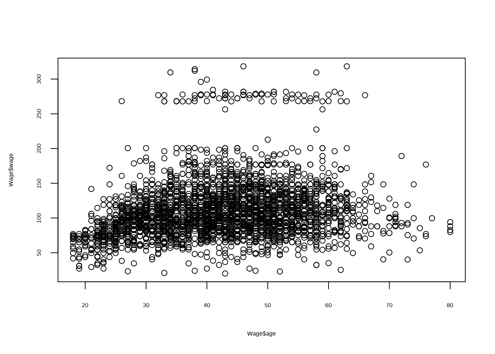
- 2次の多項式回帰
# 2次
res_lm2 <- lm(wage ~ poly(age, 2), data = Wage) # 2次の直交多項式
head(poly(Wage$age, 2)) # 2次の多項式
#> 1 2
#> [1,] -0.0386247992 0.055908727
#> [2,] -0.0291326034 0.026298066
#> [3,] 0.0040900817 -0.014506548
#> [4,] 0.0009260164 -0.014831404
#> [5,] 0.0120002448 -0.009815846
#> [6,] 0.0183283753 -0.002073906
coef(summary(res_lm2))
#> Estimate Std. Error t value Pr(>|t|)
#> (Intercept) 111.7036 0.730162 152.98470 0.000000e+00
#> poly(age, 2)1 447.0679 39.992617 11.17876 1.878131e-28
#> poly(age, 2)2 -478.3158 39.992617 -11.96010 3.077420e-32
plot(Wage$age, predict(res_lm2), pch = 2, col = "blue")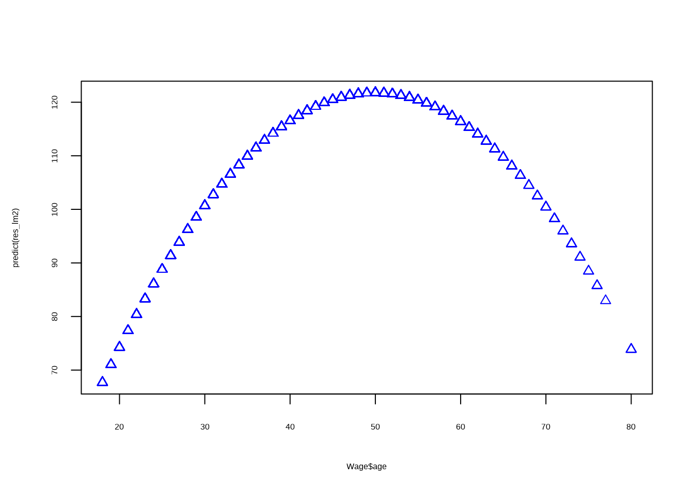
- 3次の多項式回帰
# 3次
res_lm3 <- lm(wage ~ poly(age, 3), data = Wage) # 3次の直交多項式
head(poly(Wage$age, 3)) # 3次の多項式
#> 1 2 3
#> [1,] -0.0386247992 0.055908727 -0.0717405794
#> [2,] -0.0291326034 0.026298066 -0.0145499511
#> [3,] 0.0040900817 -0.014506548 -0.0001331835
#> [4,] 0.0009260164 -0.014831404 0.0045136682
#> [5,] 0.0120002448 -0.009815846 -0.0111366263
#> [6,] 0.0183283753 -0.002073906 -0.0166282799
coef(summary(res_lm3))
#> Estimate Std. Error t value Pr(>|t|)
#> (Intercept) 111.7036 0.7290826 153.211181 0.000000e+00
#> poly(age, 3)1 447.0679 39.9334995 11.195309 1.570802e-28
#> poly(age, 3)2 -478.3158 39.9334995 -11.977808 2.511784e-32
#> poly(age, 3)3 125.5217 39.9334995 3.143268 1.687063e-03
plot(Wage$age, predict(res_lm3), pch = 2, col = "blue")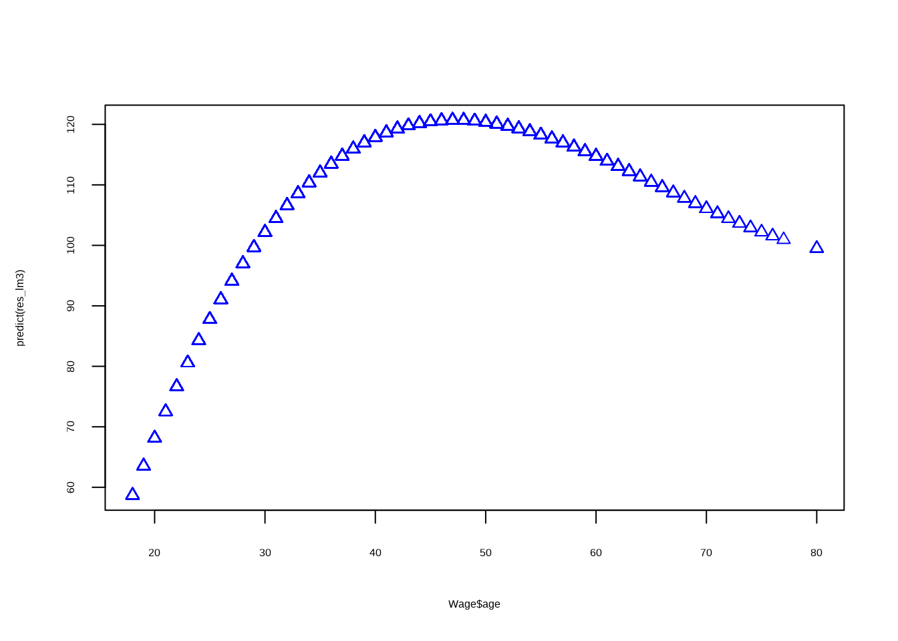
- 4次の多項式回帰
# 4次
res_lm4 <- lm(wage ~ poly(age, 4), data = Wage) # 4次の直交多項式
head(poly(Wage$age, 4)) # 4次の多項式
#> 1 2 3 4
#> [1,] -0.0386247992 0.055908727 -0.0717405794 0.086729854
#> [2,] -0.0291326034 0.026298066 -0.0145499511 -0.002599280
#> [3,] 0.0040900817 -0.014506548 -0.0001331835 0.014480093
#> [4,] 0.0009260164 -0.014831404 0.0045136682 0.012657507
#> [5,] 0.0120002448 -0.009815846 -0.0111366263 0.010211456
#> [6,] 0.0183283753 -0.002073906 -0.0166282799 -0.001314381
coef(summary(res_lm4))
#> Estimate Std. Error t value Pr(>|t|)
#> (Intercept) 111.70361 0.7287409 153.283015 0.000000e+00
#> poly(age, 4)1 447.06785 39.9147851 11.200558 1.484604e-28
#> poly(age, 4)2 -478.31581 39.9147851 -11.983424 2.355831e-32
#> poly(age, 4)3 125.52169 39.9147851 3.144742 1.678622e-03
#> poly(age, 4)4 -77.91118 39.9147851 -1.951938 5.103865e-02
plot(Wage$age, predict(res_lm4), pch = 2, col = "blue")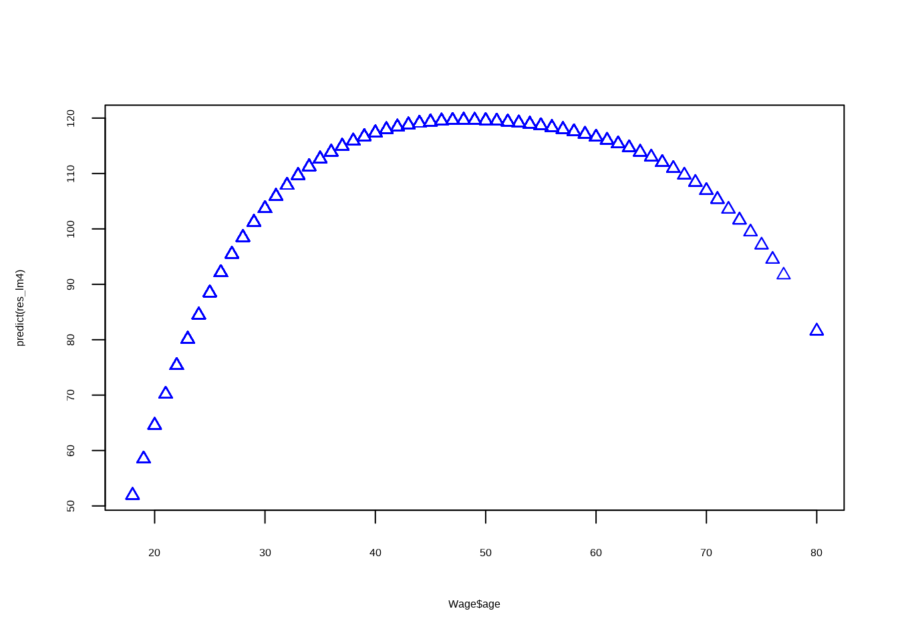
#
res_lm4_2 <- lm(wage ~ poly(age, 4, raw = T), data = Wage) # 非直交化
head(poly(Wage$age, 4, raw = T)) # 4次の多項式
#> 1 2 3 4
#> [1,] 18 324 5832 104976
#> [2,] 24 576 13824 331776
#> [3,] 45 2025 91125 4100625
#> [4,] 43 1849 79507 3418801
#> [5,] 50 2500 125000 6250000
#> [6,] 54 2916 157464 8503056
coef(summary(res_lm4_2))
#> Estimate Std. Error t value Pr(>|t|)
#> (Intercept) -1.841542e+02 6.004038e+01 -3.067172 0.0021802539
#> poly(age, 4, raw = T)1 2.124552e+01 5.886748e+00 3.609042 0.0003123618
#> poly(age, 4, raw = T)2 -5.638593e-01 2.061083e-01 -2.735743 0.0062606446
#> poly(age, 4, raw = T)3 6.810688e-03 3.065931e-03 2.221409 0.0263977518
#> poly(age, 4, raw = T)4 -3.203830e-05 1.641359e-05 -1.951938 0.0510386498モデル式を変えて結果を比較する.
# 上と同一
res_lm4_3 <- lm(wage ~ age + I(age^2) + I(age^3) + I(age^4), data = Wage)
coef(summary(res_lm4_3))
#
res_lm4_3 <- lm(wage ~ cbind(age, age^2, age^3, age^4), data = Wage)
coef(summary(res_lm4_3))
# 以下と比較せよ
res_lm4_4 <- lm(wage ~ age + age^2 + age^3 + age^4, data = Wage)
coef(summary(res_lm4_4))